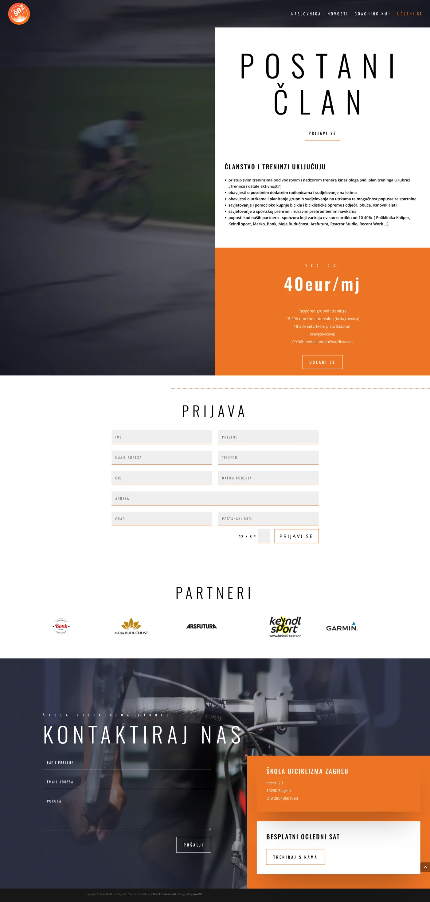
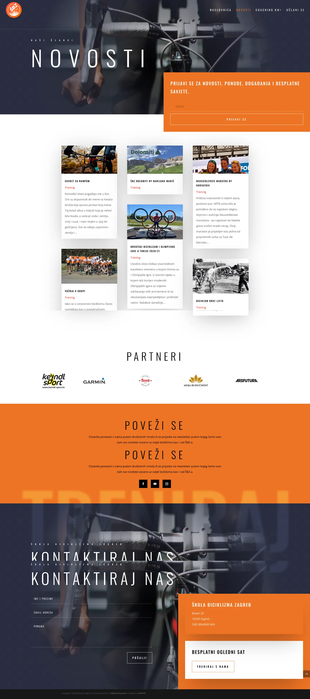
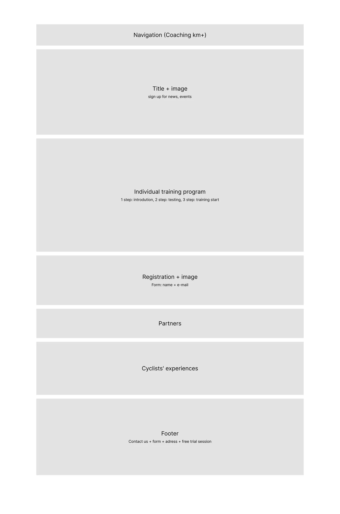
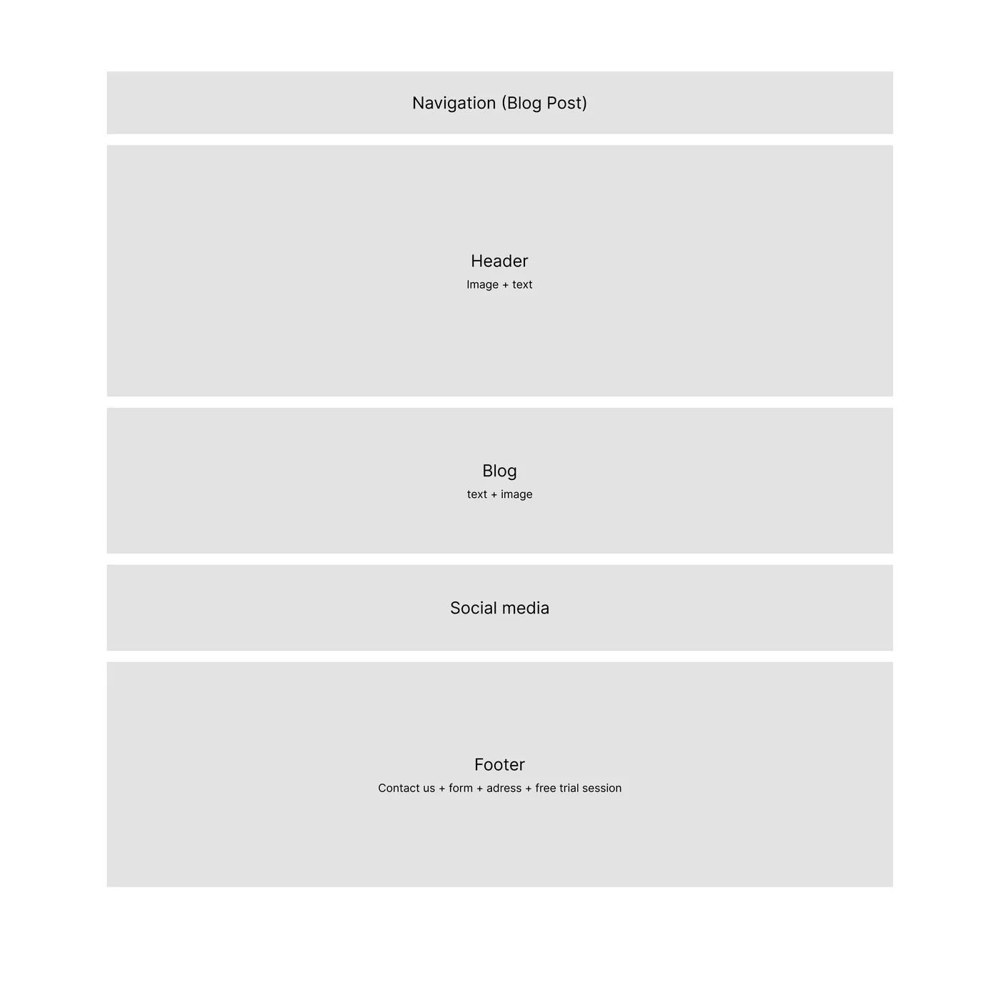
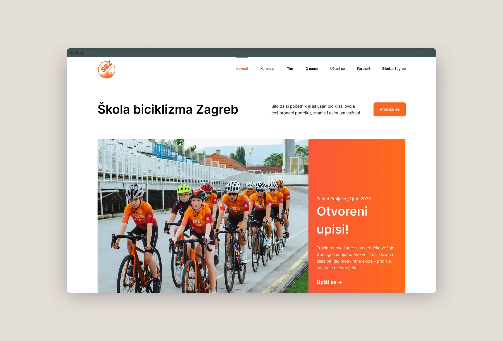

UX/UI dizajn · Redizajn weba
Škola biciklizma Zagreb
Redizajn web-stranice Škole biciklizma Zagreb s fokusom na jasniju informacijsku arhitekturu, jednostavniju navigaciju i lakši pristup programima, cijenama i članstvu.
Podaci o projektu
Izazov
Postojeći WordPress predložak miješao je novosti, programe, informacije o treninzima i obrasce za prijavu na dugim, zbijenim stranicama. Posjetitelji koji traže program, cijenu ili način učlanjenja morali su skrolati kroz nepovezan sadržaj, a najvažnija radnja, prijava, lako se previdjela.
Moj pristup
Krenula sam od pregleda postojećih stranica i grupiranja sadržaja prema onome što posjetitelji dolaze pronaći. Wireframeovima sam prije vizualnog dizajna odredila jasan redoslijed sekcija za svaku ključnu stranicu: najprije programi i cijene, zatim istaknuto članstvo, a obrasci za prijavu odmah nakon informacija na koje se odnose. Dosljedna navigacija i podnožje, jača vizualna hijerarhija i rasporedi prilagođeni mobitelu povezuju sve stranice.
Projekt je potvrdio da su mnogi problemi upotrebljivosti na sadržajno opterećenim stranicama strukturni: kad je sadržaj pravilno poredan, vizualni dizajn ima puno manje toga za popraviti.
Proces
Postojeća stranica
Izvorne stranice: dugi, zbijeni rasporedi u kojima se programi, cijene i prijava natječu s novostima i partnerskim sadržajem.




Wireframeovi
Svaka ključna stranica restrukturirana oko jedne svrhe, sa sekcijama poredanima prema važnosti prije vizualnog dizajna.





Finalni dizajn
